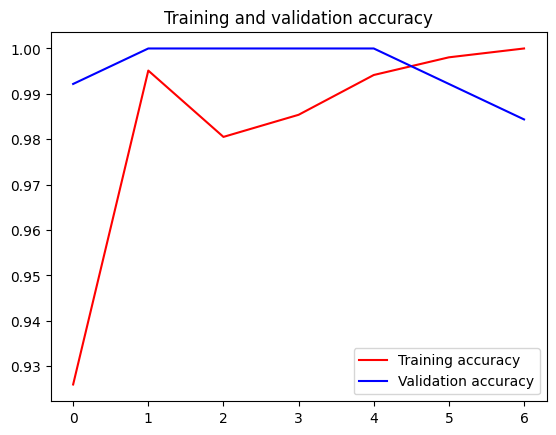

C2W3: Transfer Learning
Contents
C2W3: Transfer Learning#
https-deeplearning-ai/tensorflow-1-public/C2/W3/assignment/C2W3_Assignment.ipynb
Commit
d79901fon Feb 23, 2023 - Compare
import os
import zipfile
import matplotlib.pyplot as plt
import tensorflow as tf
from tensorflow.keras import layers
from tensorflow.keras import Model
from tensorflow.keras.optimizers import RMSprop
from tensorflow.keras.preprocessing.image import ImageDataGenerator
from tensorflow.keras.utils import img_to_array, load_img
Dataset#
!wget -q https://storage.googleapis.com/tensorflow-1-public/course2/week3/horse-or-human.zip
!wget -q https://storage.googleapis.com/tensorflow-1-public/course2/week3/validation-horse-or-human.zip
test_local_zip = './horse-or-human.zip'
zip_ref = zipfile.ZipFile(test_local_zip, 'r')
zip_ref.extractall('/tmp/training')
val_local_zip = './validation-horse-or-human.zip'
zip_ref = zipfile.ZipFile(val_local_zip, 'r')
zip_ref.extractall('/tmp/validation')
zip_ref.close()
train_dir = '/tmp/training'
validation_dir = '/tmp/validation'
train_horses_dir = os.path.join(train_dir, 'horses')
train_humans_dir = os.path.join(train_dir, 'humans')
validation_horses_dir = os.path.join(validation_dir, 'horses')
validation_humans_dir = os.path.join(validation_dir, 'humans')
# Check the number of images for each class and set
print(f"There are {len(os.listdir(train_horses_dir))} images of horses for training.\n")
print(f"There are {len(os.listdir(train_humans_dir))} images of humans for training.\n")
print(f"There are {len(os.listdir(validation_horses_dir))} images of horses for validation.\n")
print(f"There are {len(os.listdir(validation_humans_dir))} images of humans for validation.\n")
There are 500 images of horses for training.
There are 527 images of humans for training.
There are 128 images of horses for validation.
There are 128 images of humans for validation.
print("Sample horse image:")
plt.imshow(load_img(f"{os.path.join(train_horses_dir, os.listdir(train_horses_dir)[0])}"))
plt.show()
print("\nSample human image:")
plt.imshow(load_img(f"{os.path.join(train_humans_dir, os.listdir(train_humans_dir)[0])}"))
plt.show()
Sample horse image:
Sample human image:
sample_image = load_img(f"{os.path.join(train_horses_dir, os.listdir(train_horses_dir)[0])}")
# Convert the image into its numpy array representation
sample_array = img_to_array(sample_image)
print(f"Each image has shape: {sample_array.shape}")
Each image has shape: (300, 300, 3)
Training and Validation Generators#
def train_val_generators(TRAINING_DIR, VALIDATION_DIR):
train_datagen = ImageDataGenerator(rescale=1/255,
rotation_range=40,
width_shift_range=0.2,
height_shift_range=0.2,
shear_range=0.2,
zoom_range=0.2,
horizontal_flip=True,
fill_mode='nearest')
train_generator = train_datagen.flow_from_directory(directory=TRAINING_DIR,
batch_size=32,
class_mode='binary',
target_size=(150, 150))
validation_datagen = ImageDataGenerator(rescale=1/255)
validation_generator = validation_datagen.flow_from_directory(directory=VALIDATION_DIR,
batch_size=32,
class_mode='binary',
target_size=(150, 150))
return train_generator, validation_generator
train_generator, validation_generator = train_val_generators(train_dir, validation_dir)
Found 1027 images belonging to 2 classes.
Found 256 images belonging to 2 classes.
!wget --no-check-certificate \
https://storage.googleapis.com/mledu-datasets/inception_v3_weights_tf_dim_ordering_tf_kernels_notop.h5 \
-O /tmp/inception_v3_weights_tf_dim_ordering_tf_kernels_notop.h5
--2023-04-12 15:46:54-- https://storage.googleapis.com/mledu-datasets/inception_v3_weights_tf_dim_ordering_tf_kernels_notop.h5
Resolving storage.googleapis.com (storage.googleapis.com)... 172.217.14.112, 172.217.14.80, 142.250.68.16, ...
Connecting to storage.googleapis.com (storage.googleapis.com)|172.217.14.112|:443... connected.
HTTP request sent, awaiting response... 200 OK
Length: 87910968 (84M) [application/x-hdf]
Saving to: ‘/tmp/inception_v3_weights_tf_dim_ordering_tf_kernels_notop.h5’
/tmp/inception_v3_w 100%[===================>] 83.84M 5.92MB/s in 14s
2023-04-12 15:47:08 (5.98 MB/s) - ‘/tmp/inception_v3_weights_tf_dim_ordering_tf_kernels_notop.h5’ saved [87910968/87910968]
from tensorflow.keras.applications.inception_v3 import InceptionV3
local_weights_file = '/tmp/inception_v3_weights_tf_dim_ordering_tf_kernels_notop.h5'
def create_pre_trained_model(local_weights_file):
pre_trained_model = InceptionV3(input_shape = (150, 150, 3),
include_top = False,
weights = None)
pre_trained_model.load_weights(local_weights_file)
for layer in pre_trained_model.layers:
layer.trainable = False
return pre_trained_model
pre_trained_model = create_pre_trained_model(local_weights_file)
pre_trained_model.summary()
Model: "inception_v3"
__________________________________________________________________________________________________
Layer (type) Output Shape Param # Connected to
==================================================================================================
input_1 (InputLayer) [(None, 150, 150, 3 0 []
)]
conv2d (Conv2D) (None, 74, 74, 32) 864 ['input_1[0][0]']
batch_normalization (BatchNorm (None, 74, 74, 32) 96 ['conv2d[0][0]']
alization)
activation (Activation) (None, 74, 74, 32) 0 ['batch_normalization[0][0]']
conv2d_1 (Conv2D) (None, 72, 72, 32) 9216 ['activation[0][0]']
batch_normalization_1 (BatchNo (None, 72, 72, 32) 96 ['conv2d_1[0][0]']
rmalization)
activation_1 (Activation) (None, 72, 72, 32) 0 ['batch_normalization_1[0][0]']
conv2d_2 (Conv2D) (None, 72, 72, 64) 18432 ['activation_1[0][0]']
batch_normalization_2 (BatchNo (None, 72, 72, 64) 192 ['conv2d_2[0][0]']
rmalization)
activation_2 (Activation) (None, 72, 72, 64) 0 ['batch_normalization_2[0][0]']
max_pooling2d (MaxPooling2D) (None, 35, 35, 64) 0 ['activation_2[0][0]']
conv2d_3 (Conv2D) (None, 35, 35, 80) 5120 ['max_pooling2d[0][0]']
batch_normalization_3 (BatchNo (None, 35, 35, 80) 240 ['conv2d_3[0][0]']
rmalization)
activation_3 (Activation) (None, 35, 35, 80) 0 ['batch_normalization_3[0][0]']
conv2d_4 (Conv2D) (None, 33, 33, 192) 138240 ['activation_3[0][0]']
batch_normalization_4 (BatchNo (None, 33, 33, 192) 576 ['conv2d_4[0][0]']
rmalization)
activation_4 (Activation) (None, 33, 33, 192) 0 ['batch_normalization_4[0][0]']
max_pooling2d_1 (MaxPooling2D) (None, 16, 16, 192) 0 ['activation_4[0][0]']
conv2d_8 (Conv2D) (None, 16, 16, 64) 12288 ['max_pooling2d_1[0][0]']
batch_normalization_8 (BatchNo (None, 16, 16, 64) 192 ['conv2d_8[0][0]']
rmalization)
activation_8 (Activation) (None, 16, 16, 64) 0 ['batch_normalization_8[0][0]']
conv2d_6 (Conv2D) (None, 16, 16, 48) 9216 ['max_pooling2d_1[0][0]']
conv2d_9 (Conv2D) (None, 16, 16, 96) 55296 ['activation_8[0][0]']
batch_normalization_6 (BatchNo (None, 16, 16, 48) 144 ['conv2d_6[0][0]']
rmalization)
batch_normalization_9 (BatchNo (None, 16, 16, 96) 288 ['conv2d_9[0][0]']
rmalization)
activation_6 (Activation) (None, 16, 16, 48) 0 ['batch_normalization_6[0][0]']
activation_9 (Activation) (None, 16, 16, 96) 0 ['batch_normalization_9[0][0]']
average_pooling2d (AveragePool (None, 16, 16, 192) 0 ['max_pooling2d_1[0][0]']
ing2D)
conv2d_5 (Conv2D) (None, 16, 16, 64) 12288 ['max_pooling2d_1[0][0]']
conv2d_7 (Conv2D) (None, 16, 16, 64) 76800 ['activation_6[0][0]']
conv2d_10 (Conv2D) (None, 16, 16, 96) 82944 ['activation_9[0][0]']
conv2d_11 (Conv2D) (None, 16, 16, 32) 6144 ['average_pooling2d[0][0]']
batch_normalization_5 (BatchNo (None, 16, 16, 64) 192 ['conv2d_5[0][0]']
rmalization)
batch_normalization_7 (BatchNo (None, 16, 16, 64) 192 ['conv2d_7[0][0]']
rmalization)
batch_normalization_10 (BatchN (None, 16, 16, 96) 288 ['conv2d_10[0][0]']
ormalization)
batch_normalization_11 (BatchN (None, 16, 16, 32) 96 ['conv2d_11[0][0]']
ormalization)
activation_5 (Activation) (None, 16, 16, 64) 0 ['batch_normalization_5[0][0]']
activation_7 (Activation) (None, 16, 16, 64) 0 ['batch_normalization_7[0][0]']
activation_10 (Activation) (None, 16, 16, 96) 0 ['batch_normalization_10[0][0]']
activation_11 (Activation) (None, 16, 16, 32) 0 ['batch_normalization_11[0][0]']
mixed0 (Concatenate) (None, 16, 16, 256) 0 ['activation_5[0][0]',
'activation_7[0][0]',
'activation_10[0][0]',
'activation_11[0][0]']
conv2d_15 (Conv2D) (None, 16, 16, 64) 16384 ['mixed0[0][0]']
batch_normalization_15 (BatchN (None, 16, 16, 64) 192 ['conv2d_15[0][0]']
ormalization)
activation_15 (Activation) (None, 16, 16, 64) 0 ['batch_normalization_15[0][0]']
conv2d_13 (Conv2D) (None, 16, 16, 48) 12288 ['mixed0[0][0]']
conv2d_16 (Conv2D) (None, 16, 16, 96) 55296 ['activation_15[0][0]']
batch_normalization_13 (BatchN (None, 16, 16, 48) 144 ['conv2d_13[0][0]']
ormalization)
batch_normalization_16 (BatchN (None, 16, 16, 96) 288 ['conv2d_16[0][0]']
ormalization)
activation_13 (Activation) (None, 16, 16, 48) 0 ['batch_normalization_13[0][0]']
activation_16 (Activation) (None, 16, 16, 96) 0 ['batch_normalization_16[0][0]']
average_pooling2d_1 (AveragePo (None, 16, 16, 256) 0 ['mixed0[0][0]']
oling2D)
conv2d_12 (Conv2D) (None, 16, 16, 64) 16384 ['mixed0[0][0]']
conv2d_14 (Conv2D) (None, 16, 16, 64) 76800 ['activation_13[0][0]']
conv2d_17 (Conv2D) (None, 16, 16, 96) 82944 ['activation_16[0][0]']
conv2d_18 (Conv2D) (None, 16, 16, 64) 16384 ['average_pooling2d_1[0][0]']
batch_normalization_12 (BatchN (None, 16, 16, 64) 192 ['conv2d_12[0][0]']
ormalization)
batch_normalization_14 (BatchN (None, 16, 16, 64) 192 ['conv2d_14[0][0]']
ormalization)
batch_normalization_17 (BatchN (None, 16, 16, 96) 288 ['conv2d_17[0][0]']
ormalization)
batch_normalization_18 (BatchN (None, 16, 16, 64) 192 ['conv2d_18[0][0]']
ormalization)
activation_12 (Activation) (None, 16, 16, 64) 0 ['batch_normalization_12[0][0]']
activation_14 (Activation) (None, 16, 16, 64) 0 ['batch_normalization_14[0][0]']
activation_17 (Activation) (None, 16, 16, 96) 0 ['batch_normalization_17[0][0]']
activation_18 (Activation) (None, 16, 16, 64) 0 ['batch_normalization_18[0][0]']
mixed1 (Concatenate) (None, 16, 16, 288) 0 ['activation_12[0][0]',
'activation_14[0][0]',
'activation_17[0][0]',
'activation_18[0][0]']
conv2d_22 (Conv2D) (None, 16, 16, 64) 18432 ['mixed1[0][0]']
batch_normalization_22 (BatchN (None, 16, 16, 64) 192 ['conv2d_22[0][0]']
ormalization)
activation_22 (Activation) (None, 16, 16, 64) 0 ['batch_normalization_22[0][0]']
conv2d_20 (Conv2D) (None, 16, 16, 48) 13824 ['mixed1[0][0]']
conv2d_23 (Conv2D) (None, 16, 16, 96) 55296 ['activation_22[0][0]']
batch_normalization_20 (BatchN (None, 16, 16, 48) 144 ['conv2d_20[0][0]']
ormalization)
batch_normalization_23 (BatchN (None, 16, 16, 96) 288 ['conv2d_23[0][0]']
ormalization)
activation_20 (Activation) (None, 16, 16, 48) 0 ['batch_normalization_20[0][0]']
activation_23 (Activation) (None, 16, 16, 96) 0 ['batch_normalization_23[0][0]']
average_pooling2d_2 (AveragePo (None, 16, 16, 288) 0 ['mixed1[0][0]']
oling2D)
conv2d_19 (Conv2D) (None, 16, 16, 64) 18432 ['mixed1[0][0]']
conv2d_21 (Conv2D) (None, 16, 16, 64) 76800 ['activation_20[0][0]']
conv2d_24 (Conv2D) (None, 16, 16, 96) 82944 ['activation_23[0][0]']
conv2d_25 (Conv2D) (None, 16, 16, 64) 18432 ['average_pooling2d_2[0][0]']
batch_normalization_19 (BatchN (None, 16, 16, 64) 192 ['conv2d_19[0][0]']
ormalization)
batch_normalization_21 (BatchN (None, 16, 16, 64) 192 ['conv2d_21[0][0]']
ormalization)
batch_normalization_24 (BatchN (None, 16, 16, 96) 288 ['conv2d_24[0][0]']
ormalization)
batch_normalization_25 (BatchN (None, 16, 16, 64) 192 ['conv2d_25[0][0]']
ormalization)
activation_19 (Activation) (None, 16, 16, 64) 0 ['batch_normalization_19[0][0]']
activation_21 (Activation) (None, 16, 16, 64) 0 ['batch_normalization_21[0][0]']
activation_24 (Activation) (None, 16, 16, 96) 0 ['batch_normalization_24[0][0]']
activation_25 (Activation) (None, 16, 16, 64) 0 ['batch_normalization_25[0][0]']
mixed2 (Concatenate) (None, 16, 16, 288) 0 ['activation_19[0][0]',
'activation_21[0][0]',
'activation_24[0][0]',
'activation_25[0][0]']
conv2d_27 (Conv2D) (None, 16, 16, 64) 18432 ['mixed2[0][0]']
batch_normalization_27 (BatchN (None, 16, 16, 64) 192 ['conv2d_27[0][0]']
ormalization)
activation_27 (Activation) (None, 16, 16, 64) 0 ['batch_normalization_27[0][0]']
conv2d_28 (Conv2D) (None, 16, 16, 96) 55296 ['activation_27[0][0]']
batch_normalization_28 (BatchN (None, 16, 16, 96) 288 ['conv2d_28[0][0]']
ormalization)
activation_28 (Activation) (None, 16, 16, 96) 0 ['batch_normalization_28[0][0]']
conv2d_26 (Conv2D) (None, 7, 7, 384) 995328 ['mixed2[0][0]']
conv2d_29 (Conv2D) (None, 7, 7, 96) 82944 ['activation_28[0][0]']
batch_normalization_26 (BatchN (None, 7, 7, 384) 1152 ['conv2d_26[0][0]']
ormalization)
batch_normalization_29 (BatchN (None, 7, 7, 96) 288 ['conv2d_29[0][0]']
ormalization)
activation_26 (Activation) (None, 7, 7, 384) 0 ['batch_normalization_26[0][0]']
activation_29 (Activation) (None, 7, 7, 96) 0 ['batch_normalization_29[0][0]']
max_pooling2d_2 (MaxPooling2D) (None, 7, 7, 288) 0 ['mixed2[0][0]']
mixed3 (Concatenate) (None, 7, 7, 768) 0 ['activation_26[0][0]',
'activation_29[0][0]',
'max_pooling2d_2[0][0]']
conv2d_34 (Conv2D) (None, 7, 7, 128) 98304 ['mixed3[0][0]']
batch_normalization_34 (BatchN (None, 7, 7, 128) 384 ['conv2d_34[0][0]']
ormalization)
activation_34 (Activation) (None, 7, 7, 128) 0 ['batch_normalization_34[0][0]']
conv2d_35 (Conv2D) (None, 7, 7, 128) 114688 ['activation_34[0][0]']
batch_normalization_35 (BatchN (None, 7, 7, 128) 384 ['conv2d_35[0][0]']
ormalization)
activation_35 (Activation) (None, 7, 7, 128) 0 ['batch_normalization_35[0][0]']
conv2d_31 (Conv2D) (None, 7, 7, 128) 98304 ['mixed3[0][0]']
conv2d_36 (Conv2D) (None, 7, 7, 128) 114688 ['activation_35[0][0]']
batch_normalization_31 (BatchN (None, 7, 7, 128) 384 ['conv2d_31[0][0]']
ormalization)
batch_normalization_36 (BatchN (None, 7, 7, 128) 384 ['conv2d_36[0][0]']
ormalization)
activation_31 (Activation) (None, 7, 7, 128) 0 ['batch_normalization_31[0][0]']
activation_36 (Activation) (None, 7, 7, 128) 0 ['batch_normalization_36[0][0]']
conv2d_32 (Conv2D) (None, 7, 7, 128) 114688 ['activation_31[0][0]']
conv2d_37 (Conv2D) (None, 7, 7, 128) 114688 ['activation_36[0][0]']
batch_normalization_32 (BatchN (None, 7, 7, 128) 384 ['conv2d_32[0][0]']
ormalization)
batch_normalization_37 (BatchN (None, 7, 7, 128) 384 ['conv2d_37[0][0]']
ormalization)
activation_32 (Activation) (None, 7, 7, 128) 0 ['batch_normalization_32[0][0]']
activation_37 (Activation) (None, 7, 7, 128) 0 ['batch_normalization_37[0][0]']
average_pooling2d_3 (AveragePo (None, 7, 7, 768) 0 ['mixed3[0][0]']
oling2D)
conv2d_30 (Conv2D) (None, 7, 7, 192) 147456 ['mixed3[0][0]']
conv2d_33 (Conv2D) (None, 7, 7, 192) 172032 ['activation_32[0][0]']
conv2d_38 (Conv2D) (None, 7, 7, 192) 172032 ['activation_37[0][0]']
conv2d_39 (Conv2D) (None, 7, 7, 192) 147456 ['average_pooling2d_3[0][0]']
batch_normalization_30 (BatchN (None, 7, 7, 192) 576 ['conv2d_30[0][0]']
ormalization)
batch_normalization_33 (BatchN (None, 7, 7, 192) 576 ['conv2d_33[0][0]']
ormalization)
batch_normalization_38 (BatchN (None, 7, 7, 192) 576 ['conv2d_38[0][0]']
ormalization)
batch_normalization_39 (BatchN (None, 7, 7, 192) 576 ['conv2d_39[0][0]']
ormalization)
activation_30 (Activation) (None, 7, 7, 192) 0 ['batch_normalization_30[0][0]']
activation_33 (Activation) (None, 7, 7, 192) 0 ['batch_normalization_33[0][0]']
activation_38 (Activation) (None, 7, 7, 192) 0 ['batch_normalization_38[0][0]']
activation_39 (Activation) (None, 7, 7, 192) 0 ['batch_normalization_39[0][0]']
mixed4 (Concatenate) (None, 7, 7, 768) 0 ['activation_30[0][0]',
'activation_33[0][0]',
'activation_38[0][0]',
'activation_39[0][0]']
conv2d_44 (Conv2D) (None, 7, 7, 160) 122880 ['mixed4[0][0]']
batch_normalization_44 (BatchN (None, 7, 7, 160) 480 ['conv2d_44[0][0]']
ormalization)
activation_44 (Activation) (None, 7, 7, 160) 0 ['batch_normalization_44[0][0]']
conv2d_45 (Conv2D) (None, 7, 7, 160) 179200 ['activation_44[0][0]']
batch_normalization_45 (BatchN (None, 7, 7, 160) 480 ['conv2d_45[0][0]']
ormalization)
activation_45 (Activation) (None, 7, 7, 160) 0 ['batch_normalization_45[0][0]']
conv2d_41 (Conv2D) (None, 7, 7, 160) 122880 ['mixed4[0][0]']
conv2d_46 (Conv2D) (None, 7, 7, 160) 179200 ['activation_45[0][0]']
batch_normalization_41 (BatchN (None, 7, 7, 160) 480 ['conv2d_41[0][0]']
ormalization)
batch_normalization_46 (BatchN (None, 7, 7, 160) 480 ['conv2d_46[0][0]']
ormalization)
activation_41 (Activation) (None, 7, 7, 160) 0 ['batch_normalization_41[0][0]']
activation_46 (Activation) (None, 7, 7, 160) 0 ['batch_normalization_46[0][0]']
conv2d_42 (Conv2D) (None, 7, 7, 160) 179200 ['activation_41[0][0]']
conv2d_47 (Conv2D) (None, 7, 7, 160) 179200 ['activation_46[0][0]']
batch_normalization_42 (BatchN (None, 7, 7, 160) 480 ['conv2d_42[0][0]']
ormalization)
batch_normalization_47 (BatchN (None, 7, 7, 160) 480 ['conv2d_47[0][0]']
ormalization)
activation_42 (Activation) (None, 7, 7, 160) 0 ['batch_normalization_42[0][0]']
activation_47 (Activation) (None, 7, 7, 160) 0 ['batch_normalization_47[0][0]']
average_pooling2d_4 (AveragePo (None, 7, 7, 768) 0 ['mixed4[0][0]']
oling2D)
conv2d_40 (Conv2D) (None, 7, 7, 192) 147456 ['mixed4[0][0]']
conv2d_43 (Conv2D) (None, 7, 7, 192) 215040 ['activation_42[0][0]']
conv2d_48 (Conv2D) (None, 7, 7, 192) 215040 ['activation_47[0][0]']
conv2d_49 (Conv2D) (None, 7, 7, 192) 147456 ['average_pooling2d_4[0][0]']
batch_normalization_40 (BatchN (None, 7, 7, 192) 576 ['conv2d_40[0][0]']
ormalization)
batch_normalization_43 (BatchN (None, 7, 7, 192) 576 ['conv2d_43[0][0]']
ormalization)
batch_normalization_48 (BatchN (None, 7, 7, 192) 576 ['conv2d_48[0][0]']
ormalization)
batch_normalization_49 (BatchN (None, 7, 7, 192) 576 ['conv2d_49[0][0]']
ormalization)
activation_40 (Activation) (None, 7, 7, 192) 0 ['batch_normalization_40[0][0]']
activation_43 (Activation) (None, 7, 7, 192) 0 ['batch_normalization_43[0][0]']
activation_48 (Activation) (None, 7, 7, 192) 0 ['batch_normalization_48[0][0]']
activation_49 (Activation) (None, 7, 7, 192) 0 ['batch_normalization_49[0][0]']
mixed5 (Concatenate) (None, 7, 7, 768) 0 ['activation_40[0][0]',
'activation_43[0][0]',
'activation_48[0][0]',
'activation_49[0][0]']
conv2d_54 (Conv2D) (None, 7, 7, 160) 122880 ['mixed5[0][0]']
batch_normalization_54 (BatchN (None, 7, 7, 160) 480 ['conv2d_54[0][0]']
ormalization)
activation_54 (Activation) (None, 7, 7, 160) 0 ['batch_normalization_54[0][0]']
conv2d_55 (Conv2D) (None, 7, 7, 160) 179200 ['activation_54[0][0]']
batch_normalization_55 (BatchN (None, 7, 7, 160) 480 ['conv2d_55[0][0]']
ormalization)
activation_55 (Activation) (None, 7, 7, 160) 0 ['batch_normalization_55[0][0]']
conv2d_51 (Conv2D) (None, 7, 7, 160) 122880 ['mixed5[0][0]']
conv2d_56 (Conv2D) (None, 7, 7, 160) 179200 ['activation_55[0][0]']
batch_normalization_51 (BatchN (None, 7, 7, 160) 480 ['conv2d_51[0][0]']
ormalization)
batch_normalization_56 (BatchN (None, 7, 7, 160) 480 ['conv2d_56[0][0]']
ormalization)
activation_51 (Activation) (None, 7, 7, 160) 0 ['batch_normalization_51[0][0]']
activation_56 (Activation) (None, 7, 7, 160) 0 ['batch_normalization_56[0][0]']
conv2d_52 (Conv2D) (None, 7, 7, 160) 179200 ['activation_51[0][0]']
conv2d_57 (Conv2D) (None, 7, 7, 160) 179200 ['activation_56[0][0]']
batch_normalization_52 (BatchN (None, 7, 7, 160) 480 ['conv2d_52[0][0]']
ormalization)
batch_normalization_57 (BatchN (None, 7, 7, 160) 480 ['conv2d_57[0][0]']
ormalization)
activation_52 (Activation) (None, 7, 7, 160) 0 ['batch_normalization_52[0][0]']
activation_57 (Activation) (None, 7, 7, 160) 0 ['batch_normalization_57[0][0]']
average_pooling2d_5 (AveragePo (None, 7, 7, 768) 0 ['mixed5[0][0]']
oling2D)
conv2d_50 (Conv2D) (None, 7, 7, 192) 147456 ['mixed5[0][0]']
conv2d_53 (Conv2D) (None, 7, 7, 192) 215040 ['activation_52[0][0]']
conv2d_58 (Conv2D) (None, 7, 7, 192) 215040 ['activation_57[0][0]']
conv2d_59 (Conv2D) (None, 7, 7, 192) 147456 ['average_pooling2d_5[0][0]']
batch_normalization_50 (BatchN (None, 7, 7, 192) 576 ['conv2d_50[0][0]']
ormalization)
batch_normalization_53 (BatchN (None, 7, 7, 192) 576 ['conv2d_53[0][0]']
ormalization)
batch_normalization_58 (BatchN (None, 7, 7, 192) 576 ['conv2d_58[0][0]']
ormalization)
batch_normalization_59 (BatchN (None, 7, 7, 192) 576 ['conv2d_59[0][0]']
ormalization)
activation_50 (Activation) (None, 7, 7, 192) 0 ['batch_normalization_50[0][0]']
activation_53 (Activation) (None, 7, 7, 192) 0 ['batch_normalization_53[0][0]']
activation_58 (Activation) (None, 7, 7, 192) 0 ['batch_normalization_58[0][0]']
activation_59 (Activation) (None, 7, 7, 192) 0 ['batch_normalization_59[0][0]']
mixed6 (Concatenate) (None, 7, 7, 768) 0 ['activation_50[0][0]',
'activation_53[0][0]',
'activation_58[0][0]',
'activation_59[0][0]']
conv2d_64 (Conv2D) (None, 7, 7, 192) 147456 ['mixed6[0][0]']
batch_normalization_64 (BatchN (None, 7, 7, 192) 576 ['conv2d_64[0][0]']
ormalization)
activation_64 (Activation) (None, 7, 7, 192) 0 ['batch_normalization_64[0][0]']
conv2d_65 (Conv2D) (None, 7, 7, 192) 258048 ['activation_64[0][0]']
batch_normalization_65 (BatchN (None, 7, 7, 192) 576 ['conv2d_65[0][0]']
ormalization)
activation_65 (Activation) (None, 7, 7, 192) 0 ['batch_normalization_65[0][0]']
conv2d_61 (Conv2D) (None, 7, 7, 192) 147456 ['mixed6[0][0]']
conv2d_66 (Conv2D) (None, 7, 7, 192) 258048 ['activation_65[0][0]']
batch_normalization_61 (BatchN (None, 7, 7, 192) 576 ['conv2d_61[0][0]']
ormalization)
batch_normalization_66 (BatchN (None, 7, 7, 192) 576 ['conv2d_66[0][0]']
ormalization)
activation_61 (Activation) (None, 7, 7, 192) 0 ['batch_normalization_61[0][0]']
activation_66 (Activation) (None, 7, 7, 192) 0 ['batch_normalization_66[0][0]']
conv2d_62 (Conv2D) (None, 7, 7, 192) 258048 ['activation_61[0][0]']
conv2d_67 (Conv2D) (None, 7, 7, 192) 258048 ['activation_66[0][0]']
batch_normalization_62 (BatchN (None, 7, 7, 192) 576 ['conv2d_62[0][0]']
ormalization)
batch_normalization_67 (BatchN (None, 7, 7, 192) 576 ['conv2d_67[0][0]']
ormalization)
activation_62 (Activation) (None, 7, 7, 192) 0 ['batch_normalization_62[0][0]']
activation_67 (Activation) (None, 7, 7, 192) 0 ['batch_normalization_67[0][0]']
average_pooling2d_6 (AveragePo (None, 7, 7, 768) 0 ['mixed6[0][0]']
oling2D)
conv2d_60 (Conv2D) (None, 7, 7, 192) 147456 ['mixed6[0][0]']
conv2d_63 (Conv2D) (None, 7, 7, 192) 258048 ['activation_62[0][0]']
conv2d_68 (Conv2D) (None, 7, 7, 192) 258048 ['activation_67[0][0]']
conv2d_69 (Conv2D) (None, 7, 7, 192) 147456 ['average_pooling2d_6[0][0]']
batch_normalization_60 (BatchN (None, 7, 7, 192) 576 ['conv2d_60[0][0]']
ormalization)
batch_normalization_63 (BatchN (None, 7, 7, 192) 576 ['conv2d_63[0][0]']
ormalization)
batch_normalization_68 (BatchN (None, 7, 7, 192) 576 ['conv2d_68[0][0]']
ormalization)
batch_normalization_69 (BatchN (None, 7, 7, 192) 576 ['conv2d_69[0][0]']
ormalization)
activation_60 (Activation) (None, 7, 7, 192) 0 ['batch_normalization_60[0][0]']
activation_63 (Activation) (None, 7, 7, 192) 0 ['batch_normalization_63[0][0]']
activation_68 (Activation) (None, 7, 7, 192) 0 ['batch_normalization_68[0][0]']
activation_69 (Activation) (None, 7, 7, 192) 0 ['batch_normalization_69[0][0]']
mixed7 (Concatenate) (None, 7, 7, 768) 0 ['activation_60[0][0]',
'activation_63[0][0]',
'activation_68[0][0]',
'activation_69[0][0]']
conv2d_72 (Conv2D) (None, 7, 7, 192) 147456 ['mixed7[0][0]']
batch_normalization_72 (BatchN (None, 7, 7, 192) 576 ['conv2d_72[0][0]']
ormalization)
activation_72 (Activation) (None, 7, 7, 192) 0 ['batch_normalization_72[0][0]']
conv2d_73 (Conv2D) (None, 7, 7, 192) 258048 ['activation_72[0][0]']
batch_normalization_73 (BatchN (None, 7, 7, 192) 576 ['conv2d_73[0][0]']
ormalization)
activation_73 (Activation) (None, 7, 7, 192) 0 ['batch_normalization_73[0][0]']
conv2d_70 (Conv2D) (None, 7, 7, 192) 147456 ['mixed7[0][0]']
conv2d_74 (Conv2D) (None, 7, 7, 192) 258048 ['activation_73[0][0]']
batch_normalization_70 (BatchN (None, 7, 7, 192) 576 ['conv2d_70[0][0]']
ormalization)
batch_normalization_74 (BatchN (None, 7, 7, 192) 576 ['conv2d_74[0][0]']
ormalization)
activation_70 (Activation) (None, 7, 7, 192) 0 ['batch_normalization_70[0][0]']
activation_74 (Activation) (None, 7, 7, 192) 0 ['batch_normalization_74[0][0]']
conv2d_71 (Conv2D) (None, 3, 3, 320) 552960 ['activation_70[0][0]']
conv2d_75 (Conv2D) (None, 3, 3, 192) 331776 ['activation_74[0][0]']
batch_normalization_71 (BatchN (None, 3, 3, 320) 960 ['conv2d_71[0][0]']
ormalization)
batch_normalization_75 (BatchN (None, 3, 3, 192) 576 ['conv2d_75[0][0]']
ormalization)
activation_71 (Activation) (None, 3, 3, 320) 0 ['batch_normalization_71[0][0]']
activation_75 (Activation) (None, 3, 3, 192) 0 ['batch_normalization_75[0][0]']
max_pooling2d_3 (MaxPooling2D) (None, 3, 3, 768) 0 ['mixed7[0][0]']
mixed8 (Concatenate) (None, 3, 3, 1280) 0 ['activation_71[0][0]',
'activation_75[0][0]',
'max_pooling2d_3[0][0]']
conv2d_80 (Conv2D) (None, 3, 3, 448) 573440 ['mixed8[0][0]']
batch_normalization_80 (BatchN (None, 3, 3, 448) 1344 ['conv2d_80[0][0]']
ormalization)
activation_80 (Activation) (None, 3, 3, 448) 0 ['batch_normalization_80[0][0]']
conv2d_77 (Conv2D) (None, 3, 3, 384) 491520 ['mixed8[0][0]']
conv2d_81 (Conv2D) (None, 3, 3, 384) 1548288 ['activation_80[0][0]']
batch_normalization_77 (BatchN (None, 3, 3, 384) 1152 ['conv2d_77[0][0]']
ormalization)
batch_normalization_81 (BatchN (None, 3, 3, 384) 1152 ['conv2d_81[0][0]']
ormalization)
activation_77 (Activation) (None, 3, 3, 384) 0 ['batch_normalization_77[0][0]']
activation_81 (Activation) (None, 3, 3, 384) 0 ['batch_normalization_81[0][0]']
conv2d_78 (Conv2D) (None, 3, 3, 384) 442368 ['activation_77[0][0]']
conv2d_79 (Conv2D) (None, 3, 3, 384) 442368 ['activation_77[0][0]']
conv2d_82 (Conv2D) (None, 3, 3, 384) 442368 ['activation_81[0][0]']
conv2d_83 (Conv2D) (None, 3, 3, 384) 442368 ['activation_81[0][0]']
average_pooling2d_7 (AveragePo (None, 3, 3, 1280) 0 ['mixed8[0][0]']
oling2D)
conv2d_76 (Conv2D) (None, 3, 3, 320) 409600 ['mixed8[0][0]']
batch_normalization_78 (BatchN (None, 3, 3, 384) 1152 ['conv2d_78[0][0]']
ormalization)
batch_normalization_79 (BatchN (None, 3, 3, 384) 1152 ['conv2d_79[0][0]']
ormalization)
batch_normalization_82 (BatchN (None, 3, 3, 384) 1152 ['conv2d_82[0][0]']
ormalization)
batch_normalization_83 (BatchN (None, 3, 3, 384) 1152 ['conv2d_83[0][0]']
ormalization)
conv2d_84 (Conv2D) (None, 3, 3, 192) 245760 ['average_pooling2d_7[0][0]']
batch_normalization_76 (BatchN (None, 3, 3, 320) 960 ['conv2d_76[0][0]']
ormalization)
activation_78 (Activation) (None, 3, 3, 384) 0 ['batch_normalization_78[0][0]']
activation_79 (Activation) (None, 3, 3, 384) 0 ['batch_normalization_79[0][0]']
activation_82 (Activation) (None, 3, 3, 384) 0 ['batch_normalization_82[0][0]']
activation_83 (Activation) (None, 3, 3, 384) 0 ['batch_normalization_83[0][0]']
batch_normalization_84 (BatchN (None, 3, 3, 192) 576 ['conv2d_84[0][0]']
ormalization)
activation_76 (Activation) (None, 3, 3, 320) 0 ['batch_normalization_76[0][0]']
mixed9_0 (Concatenate) (None, 3, 3, 768) 0 ['activation_78[0][0]',
'activation_79[0][0]']
concatenate (Concatenate) (None, 3, 3, 768) 0 ['activation_82[0][0]',
'activation_83[0][0]']
activation_84 (Activation) (None, 3, 3, 192) 0 ['batch_normalization_84[0][0]']
mixed9 (Concatenate) (None, 3, 3, 2048) 0 ['activation_76[0][0]',
'mixed9_0[0][0]',
'concatenate[0][0]',
'activation_84[0][0]']
conv2d_89 (Conv2D) (None, 3, 3, 448) 917504 ['mixed9[0][0]']
batch_normalization_89 (BatchN (None, 3, 3, 448) 1344 ['conv2d_89[0][0]']
ormalization)
activation_89 (Activation) (None, 3, 3, 448) 0 ['batch_normalization_89[0][0]']
conv2d_86 (Conv2D) (None, 3, 3, 384) 786432 ['mixed9[0][0]']
conv2d_90 (Conv2D) (None, 3, 3, 384) 1548288 ['activation_89[0][0]']
batch_normalization_86 (BatchN (None, 3, 3, 384) 1152 ['conv2d_86[0][0]']
ormalization)
batch_normalization_90 (BatchN (None, 3, 3, 384) 1152 ['conv2d_90[0][0]']
ormalization)
activation_86 (Activation) (None, 3, 3, 384) 0 ['batch_normalization_86[0][0]']
activation_90 (Activation) (None, 3, 3, 384) 0 ['batch_normalization_90[0][0]']
conv2d_87 (Conv2D) (None, 3, 3, 384) 442368 ['activation_86[0][0]']
conv2d_88 (Conv2D) (None, 3, 3, 384) 442368 ['activation_86[0][0]']
conv2d_91 (Conv2D) (None, 3, 3, 384) 442368 ['activation_90[0][0]']
conv2d_92 (Conv2D) (None, 3, 3, 384) 442368 ['activation_90[0][0]']
average_pooling2d_8 (AveragePo (None, 3, 3, 2048) 0 ['mixed9[0][0]']
oling2D)
conv2d_85 (Conv2D) (None, 3, 3, 320) 655360 ['mixed9[0][0]']
batch_normalization_87 (BatchN (None, 3, 3, 384) 1152 ['conv2d_87[0][0]']
ormalization)
batch_normalization_88 (BatchN (None, 3, 3, 384) 1152 ['conv2d_88[0][0]']
ormalization)
batch_normalization_91 (BatchN (None, 3, 3, 384) 1152 ['conv2d_91[0][0]']
ormalization)
batch_normalization_92 (BatchN (None, 3, 3, 384) 1152 ['conv2d_92[0][0]']
ormalization)
conv2d_93 (Conv2D) (None, 3, 3, 192) 393216 ['average_pooling2d_8[0][0]']
batch_normalization_85 (BatchN (None, 3, 3, 320) 960 ['conv2d_85[0][0]']
ormalization)
activation_87 (Activation) (None, 3, 3, 384) 0 ['batch_normalization_87[0][0]']
activation_88 (Activation) (None, 3, 3, 384) 0 ['batch_normalization_88[0][0]']
activation_91 (Activation) (None, 3, 3, 384) 0 ['batch_normalization_91[0][0]']
activation_92 (Activation) (None, 3, 3, 384) 0 ['batch_normalization_92[0][0]']
batch_normalization_93 (BatchN (None, 3, 3, 192) 576 ['conv2d_93[0][0]']
ormalization)
activation_85 (Activation) (None, 3, 3, 320) 0 ['batch_normalization_85[0][0]']
mixed9_1 (Concatenate) (None, 3, 3, 768) 0 ['activation_87[0][0]',
'activation_88[0][0]']
concatenate_1 (Concatenate) (None, 3, 3, 768) 0 ['activation_91[0][0]',
'activation_92[0][0]']
activation_93 (Activation) (None, 3, 3, 192) 0 ['batch_normalization_93[0][0]']
mixed10 (Concatenate) (None, 3, 3, 2048) 0 ['activation_85[0][0]',
'mixed9_1[0][0]',
'concatenate_1[0][0]',
'activation_93[0][0]']
==================================================================================================
Total params: 21,802,784
Trainable params: 0
Non-trainable params: 21,802,784
__________________________________________________________________________________________________
total_params = pre_trained_model.count_params()
num_trainable_params = sum([w.shape.num_elements() for w in pre_trained_model.trainable_weights])
print(f"There are {total_params:,} total parameters in this model.")
print(f"There are {num_trainable_params:,} trainable parameters in this model.")
There are 21,802,784 total parameters in this model.
There are 0 trainable parameters in this model.
Creating callbacks for later#
class myCallback(tf.keras.callbacks.Callback):
def on_epoch_end(self, epoch, logs={}):
if(logs.get('accuracy')>0.999):
print("\nReached 99.9% accuracy so cancelling training!")
self.model.stop_training = True
Pipelining the pre-trained model with your own#
def output_of_last_layer(pre_trained_model):
last_desired_layer = pre_trained_model.get_layer('mixed7')
print('last layer output shape: ', last_desired_layer.output_shape)
last_output = last_desired_layer.output
print('last layer output: ', last_output)
return last_output
last_output = output_of_last_layer(pre_trained_model)
last layer output shape: (None, 7, 7, 768)
last layer output: KerasTensor(type_spec=TensorSpec(shape=(None, 7, 7, 768), dtype=tf.float32, name=None), name='mixed7/concat:0', description="created by layer 'mixed7'")
print(f"The pretrained model has type: {type(pre_trained_model)}")
The pretrained model has type: <class 'keras.engine.functional.Functional'>
def create_final_model(pre_trained_model, last_output):
x = layers.Flatten()(last_output)
x = layers.Dense(1024, activation='relu')(x)
x = layers.Dropout(0.2)(x)
x = layers.Dense(1, activation='sigmoid')(x)
model = Model(inputs=pre_trained_model.input, outputs=x)
model.compile(optimizer = RMSprop(learning_rate=0.0001),
loss = 'binary_crossentropy',
metrics = ['accuracy'])
return model
model = create_final_model(pre_trained_model, last_output)
total_params = model.count_params()
num_trainable_params = sum([w.shape.num_elements() for w in model.trainable_weights])
print(f"There are {total_params:,} total parameters in this model.")
print(f"There are {num_trainable_params:,} trainable parameters in this model.")
There are 47,512,481 total parameters in this model.
There are 38,537,217 trainable parameters in this model.
callbacks = myCallback()
history = model.fit(train_generator,
validation_data = validation_generator,
epochs = 100,
verbose = 2,
callbacks=callbacks)
Epoch 1/100
33/33 - 17s - loss: 0.2717 - accuracy: 0.9260 - val_loss: 0.0190 - val_accuracy: 0.9922 - 17s/epoch - 513ms/step
Epoch 2/100
33/33 - 10s - loss: 0.0181 - accuracy: 0.9951 - val_loss: 0.0091 - val_accuracy: 1.0000 - 10s/epoch - 303ms/step
Epoch 3/100
33/33 - 10s - loss: 0.0731 - accuracy: 0.9805 - val_loss: 0.0017 - val_accuracy: 1.0000 - 10s/epoch - 298ms/step
Epoch 4/100
33/33 - 10s - loss: 0.0292 - accuracy: 0.9854 - val_loss: 6.7724e-04 - val_accuracy: 1.0000 - 10s/epoch - 298ms/step
Epoch 5/100
33/33 - 10s - loss: 0.0153 - accuracy: 0.9942 - val_loss: 3.0984e-04 - val_accuracy: 1.0000 - 10s/epoch - 296ms/step
Epoch 6/100
33/33 - 10s - loss: 0.0066 - accuracy: 0.9981 - val_loss: 0.0128 - val_accuracy: 0.9922 - 10s/epoch - 298ms/step
Epoch 7/100
Reached 99.9% accuracy so cancelling training!
33/33 - 10s - loss: 0.0034 - accuracy: 1.0000 - val_loss: 0.0704 - val_accuracy: 0.9844 - 10s/epoch - 294ms/step
acc = history.history['accuracy']
val_acc = history.history['val_accuracy']
loss = history.history['loss']
val_loss = history.history['val_loss']
epochs = range(len(acc))
plt.plot(epochs, acc, 'r', label='Training accuracy')
plt.plot(epochs, val_acc, 'b', label='Validation accuracy')
plt.title('Training and validation accuracy')
plt.legend(loc=0)
plt.figure()
plt.show()

<Figure size 640x480 with 0 Axes>